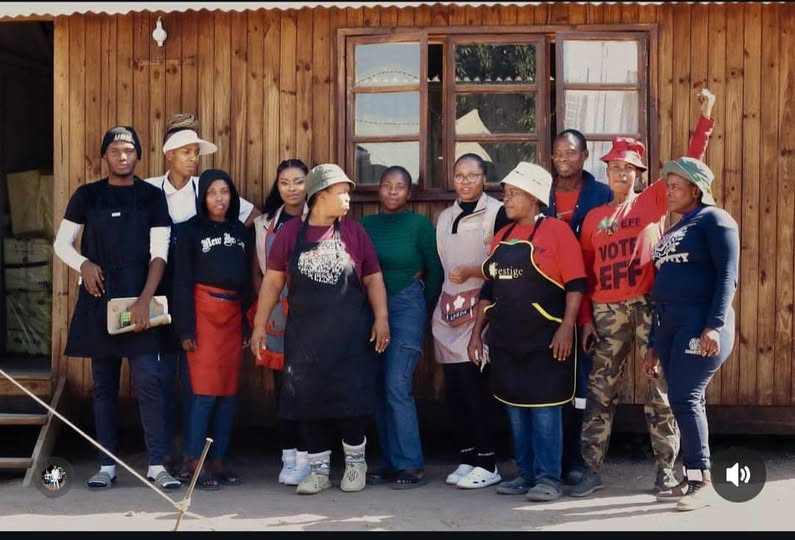

Learn more about our mission, history, and the people behind Masakaneng Soup Kitchen.
Masakaneng Soup Kitchen was founded in 2024 by Julius Malema and his
group who saw a growing need for food security in the area.
What started as a small initiative serving meals has grown into a
registered non-profit organisation serving over
350 meals daily to homeless individuals, low-income families, and the
elderly.
Over the years, we have expanded our services to include food parcel distribution, school feeding programs, and holiday meals. Today, Masakaneng Soup Kitchen is a symbol of hope and resilience in the community.
Masakaneng Soup Kitchen was founded in 2014 by Julius Malema and his group who saw a growing need for food security in the area.
To alleviate hunger and restore dignity by providing nutritious meals to vulnerable members of our community.
A community where no one goes to bed hungry.

Dedicated volunteers working together to serve warm meals to those in need.
You can drop off non-perishable food items at our kitchen in Seshego-A between 09:00 and 14:00 on weekdays.
Yes, we gladly accept gently used clothing and shoes. We distribute these items every two months.